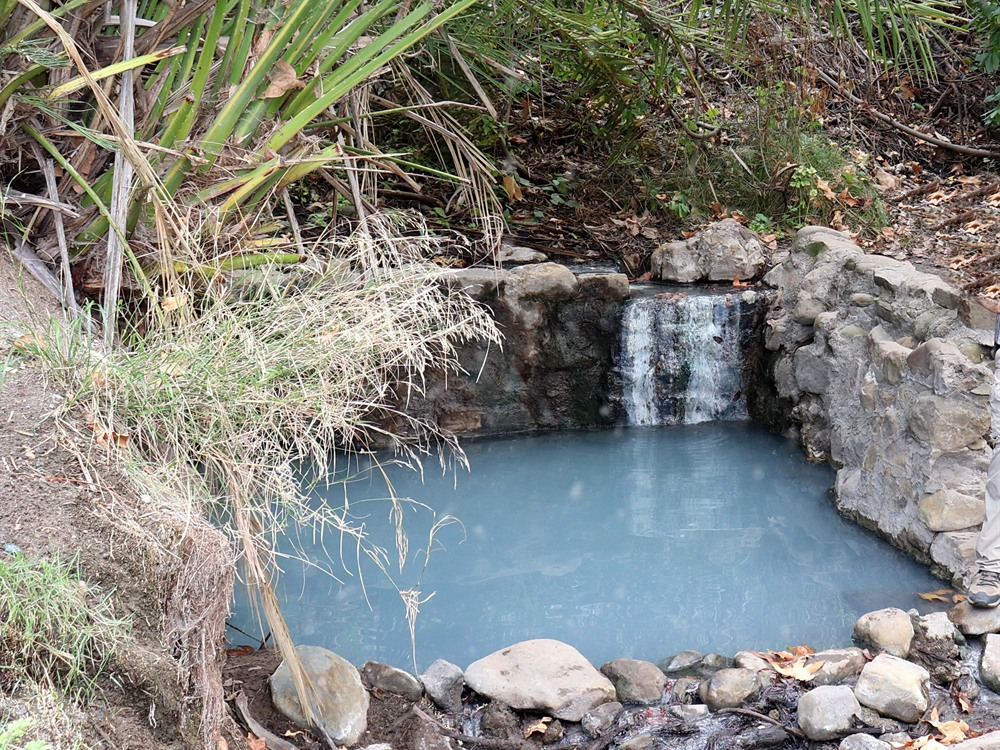
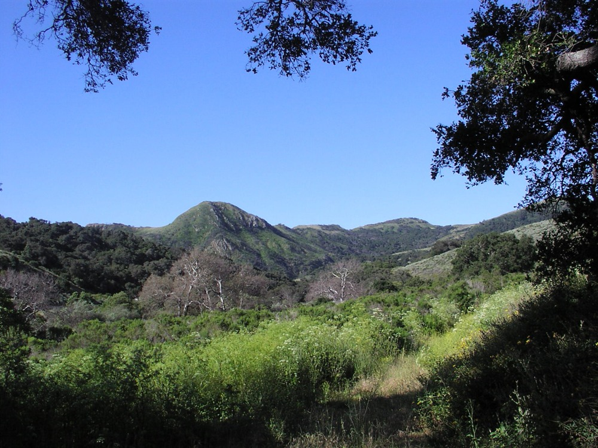

Coastal state park featuring rugged cliffs, sandy beaches, a scenic pier, and trails that connect ocean views with inland hills and open landscapes.
How to Get There
From Santa Barbara (30 mi): Take US-101 N along the coast for about 30 miles, then take the exit for the park and follow signs down toward the beach and campground area.
Overview
Gaviota State Park protects about 2,800 acres of the Gaviota Coast, one of the last relatively undeveloped stretches of Southern California shoreline, where the Santa Ynez Mountains meet the Pacific Ocean. The park was established in 1953 and runs from the beach up to the crest of the mountains next to Los Padres National Forest, with Gaviota Peak, at 2,458 feet, as its high point. Highway 101 divides the park into two units, with the beach, pier and campground in the western unit and a hot spring reached by a short dirt road on the east side of the highway. Visitors come for the quiet beach and campground, fishing, wildlife watching, and an extensive trail network of about 34 miles that includes the hike to Gaviota Hot Springs and the climb to Gaviota Peak.
Access
The park is on Highway 101 about 33 miles west of Santa Barbara, between Goleta and Buellton, and nearly all visitors arrive by car. The main entrance leads down to the beach, pier and campground, while trailheads for Gaviota Peak and the hot springs are on the opposite side of the highway. Day-use hours are listed as 7am to sunset on the state parks website, so check posted hours. There is no public transportation to the park.
Seasons
Gaviota is open year-round, and the beach campground is a popular summer destination, so reservations are needed in busy months. Spring is the best season for hiking, when the hills turn green and wildflowers bloom, and the views from Gaviota Peak are clearest after winter and spring storms. Summer days on the coast are cool and often foggy, while the inland trails can be hot and exposed. Heavy rain in winter can make some trails muddy or temporarily closed, so check the state parks website for current restrictions.
Things to Do
Experience the Gateway to California's Central Coast
Gaviota State Park is located along a spectacular stretch of California coastline west of Santa Barbara. The park combines sandy beaches, rugged coastal bluffs, oak-studded canyons, scenic hiking trails, and sweeping ocean views. Its location at the meeting point of the Santa Ynez Mountains and the Pacific Ocean creates a unique landscape that is popular with outdoor enthusiasts, photographers, and nature lovers.
Relax at Gaviota Beach
Gaviota Beach offers opportunities for swimming, fishing, picnicking, beachcombing, surfing, and enjoying the scenic coastline. The beach is located near Gaviota Pier and is known for its peaceful atmosphere and beautiful views of the Pacific Ocean.
Visit the Historic Gaviota Pier
The historic Gaviota Pier has long been a landmark along the Central Coast and provides scenic views of the ocean, coastline, and surrounding mountains. The pier area is a popular location for sightseeing, photography, and enjoying coastal sunsets.
Explore Gaviota Hot Springs
One of the park's most popular attractions is the trail leading to the historic Gaviota Hot Springs. Nestled within a canyon setting, the hot springs area offers visitors a glimpse into one of the region's best-known natural features and provides access to beautiful scenery along the route.
Enjoy Wildlife Viewing and Birdwatching
Gaviota State Park supports a variety of wildlife, including deer, hawks, owls, songbirds, marine mammals, and seasonal migratory species. The coastal and canyon habitats provide excellent opportunities for wildlife observation throughout the year.
Camp Along the Coast
The park offers campgrounds located near the beach, allowing visitors to enjoy overnight stays with easy access to the ocean, hiking trails, fishing opportunities, and scenic coastal landscapes.
Top Trails
Gaviota Peak Trail
Length: Approximately 6 miles round trip
Elevation Gain: About 2,000 feet
Difficulty: Difficult
This challenging hike ascends to Gaviota Peak, where visitors are rewarded with expansive views of the Pacific Ocean, Santa Ynez Mountains, Channel Islands, and surrounding coastline. It is one of the most iconic hikes on the Central Coast.
Gaviota Hot Springs Trail
Length: Approximately 2.5 miles round trip
Elevation Gain: Moderate
Difficulty: Easy to Moderate
This popular trail follows a scenic canyon route to the historic Gaviota Hot Springs area. Along the way, visitors enjoy oak woodlands, seasonal wildflowers, and beautiful mountain scenery.
Beach to Pier Walk
Length: Approximately 1 mile round trip
Elevation Gain: Minimal
Difficulty: Easy
This leisurely walk provides access to Gaviota Beach and the historic pier area, offering excellent opportunities for photography, wildlife viewing, and enjoying the coastal environment.
Hollister Ranch Overlook Trail
Length: Approximately 3 miles round trip
Elevation Gain: Moderate
Difficulty: Moderate
This scenic trail traverses coastal hillsides and provides panoramic views of the Pacific coastline, nearby ranchlands, and the rugged terrain that characterizes California's Gaviota Coast.
Visitor Centers
Gaviota State Park does not list a staffed visitor center. Information is available from rangers at the entrance, and the Channel Coast District office can be reached at (805) 968-1033 or ChannelCoastInfo@Parks.Ca.Gov. Trail maps and current conditions, including any trail closures, are posted on the California State Parks website. Stop for water and supplies before arriving, since services near the park are limited.
Camping and Lodging
The park has a beach campground with 39 sites for tents and RVs (most RVs up to 25 feet) near the water, and reservations are made through ReserveCalifornia. Other lodging is in Buellton and Solvang to the north, Goleta and Santa Barbara to the east, and Lompoc to the northwest, all within about an hour’s drive. Additional state park and national forest campgrounds can be found along the Santa Barbara County coast and in the nearby mountains.
Sources: California State Parks official Gaviota State Park information, including details on Gaviota Beach, camping facilities, hiking trails, wildlife viewing, fishing opportunities, and visitor amenities.
https://www.parks.ca.gov/?page_id=606https://www.parks.ca.gov/?page_id=606
Additional information verified through California State Parks and Santa Barbara County visitor resources covering Gaviota Peak, Gaviota Hot Springs, coastal recreation, scenic viewpoints, and outdoor activities along the Gaviota Coast.
https://santabarbaraca.com/https://santabarbaraca.com/
This article uses material from the Wikipedia articles and official tourism pages for the Gaviota State Park, which are released under the Creative Commons Attribution-Share-Alike License 3.0. Additional information from California State Parks.

_(32704494988).jpg){kind=link}
